Pets and Wildlife
Happy Tails
A great photo can be the reason a rescue finds a home. I photograph adoptable dogs in a way that shows their personality, from the wiggly ones to the shy ones, so the right family can picture them on the couch.
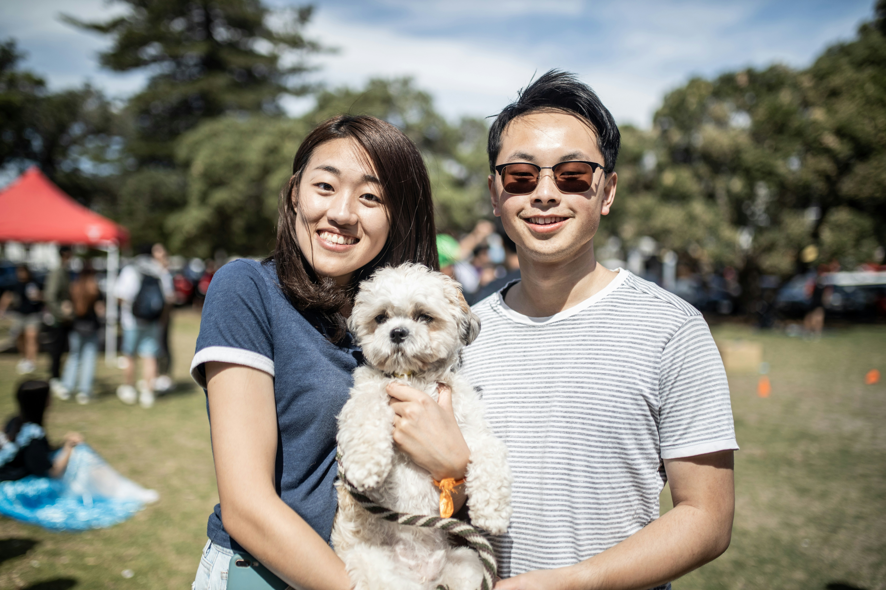
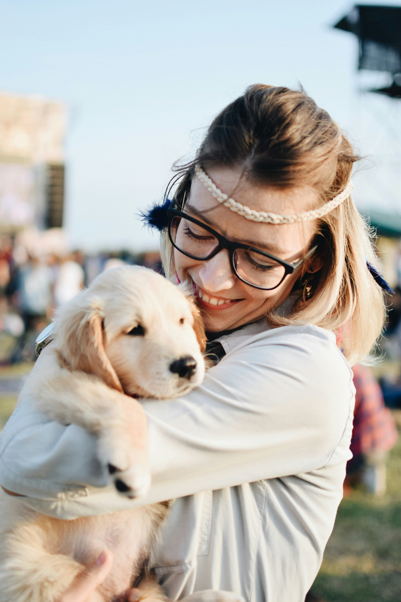
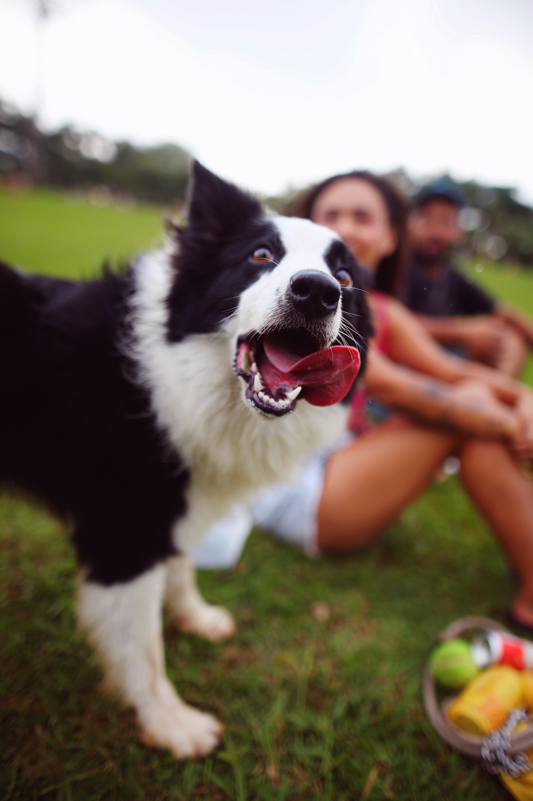
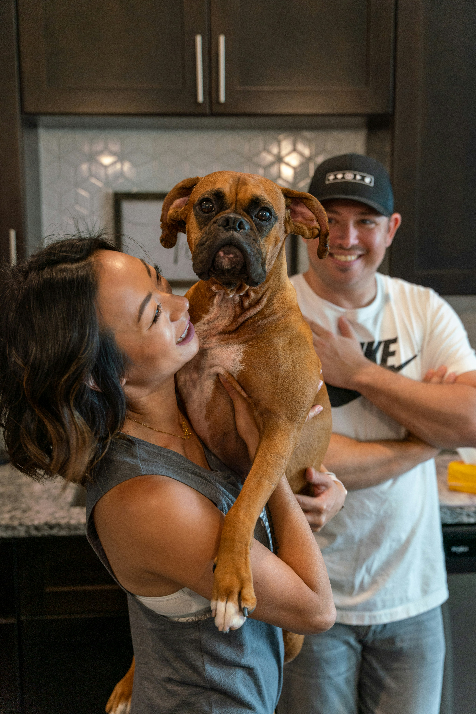
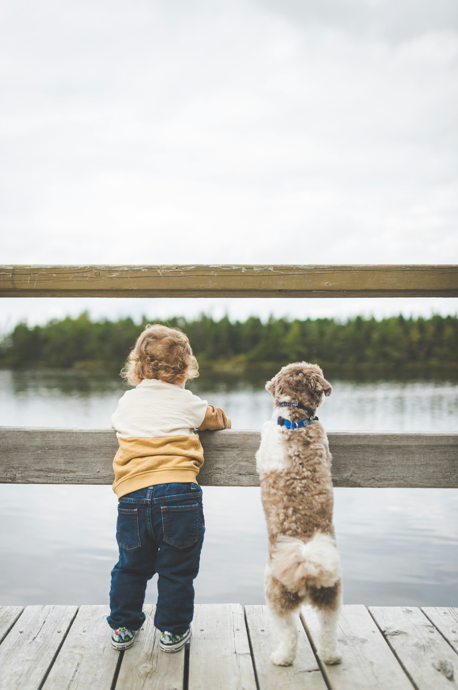
Pet Photography
Your pet is family, and their portraits should feel like them. Sessions are relaxed and play-based, with plenty of patience, treats, and room for the zoomies, so you get the goofy moments and the sweet ones.
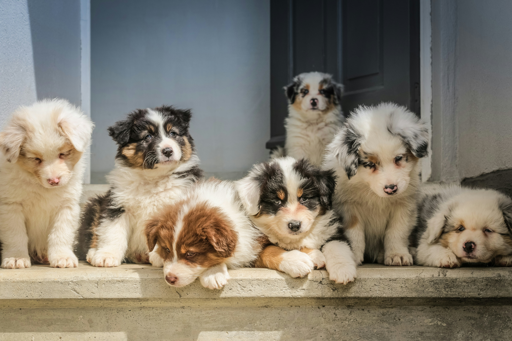
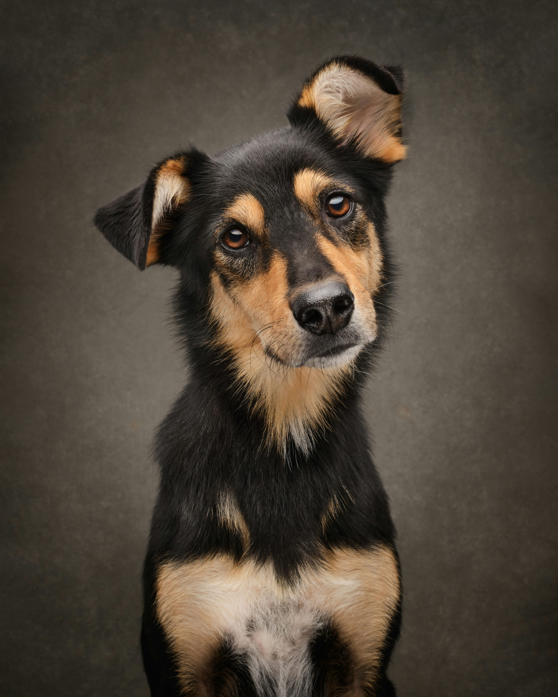
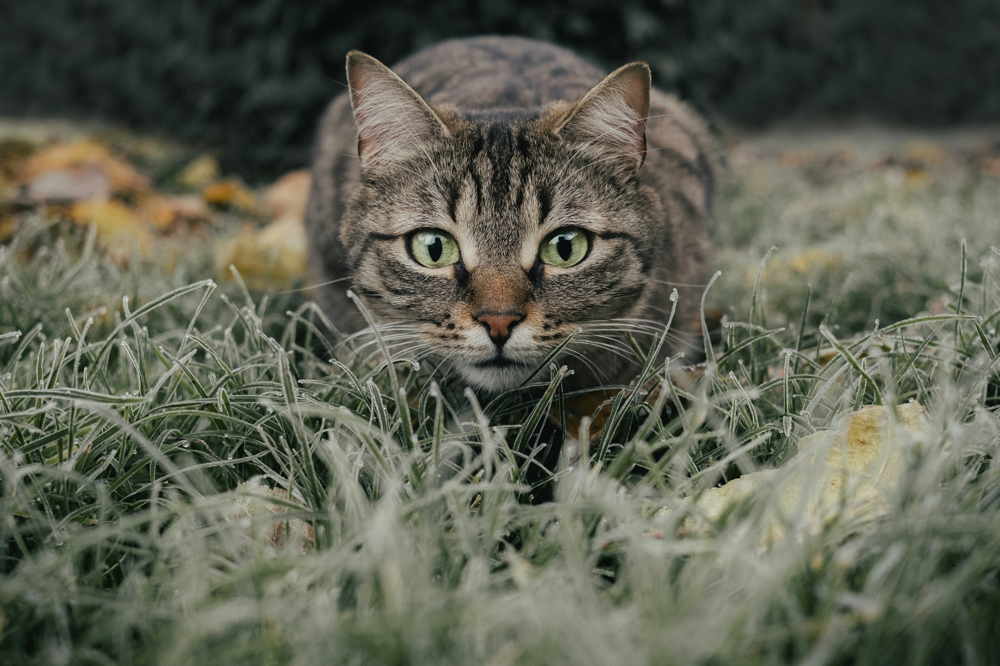
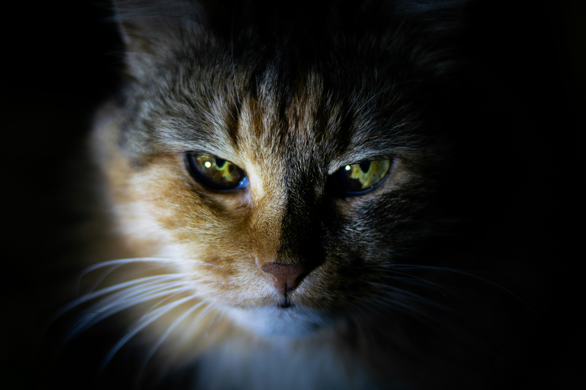

Wildlife Photography
Wildlife photography is mostly patience, quiet, and being ready when the moment happens. I love photographing animals in their own habitat, from marsh birds along the Lowcountry coast to wildlife farther afield.
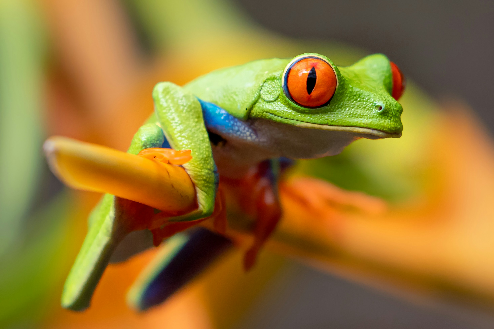
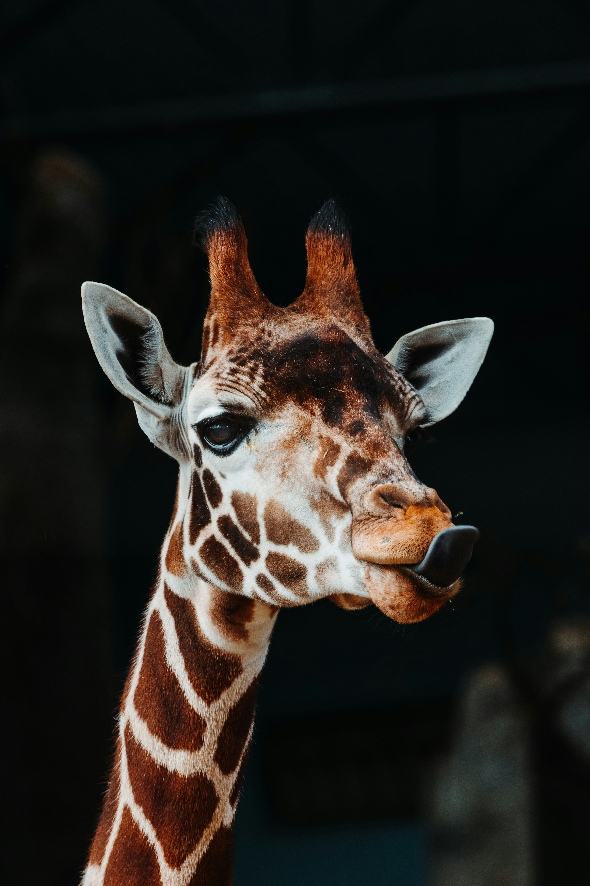
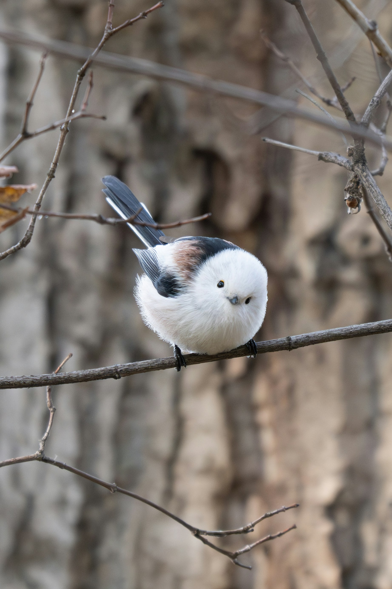
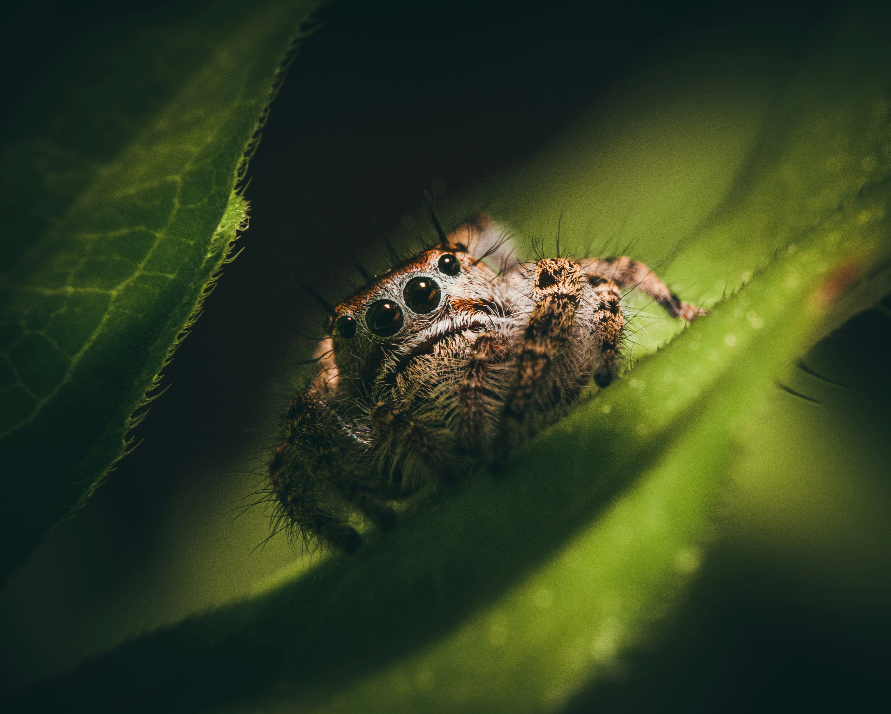
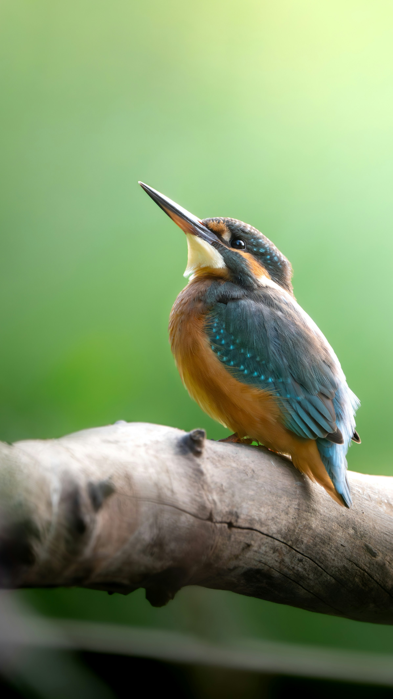